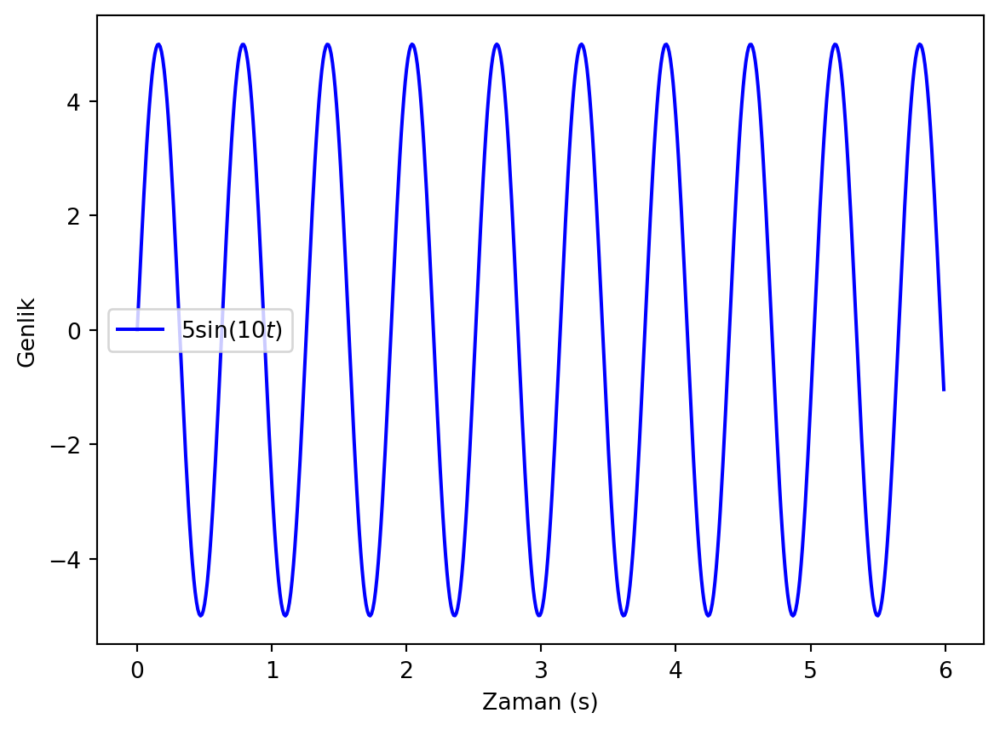

import numpy as np
import matplotlib.pyplot as plt
# Zaman
t= np.arange(0, 4*np.pi, 0.01)
# Dalganın acısal frekansı
omega= 2* np.pi* 0.2
# Çiz
plt.plot(t, np.cos(omega*t)+ np.sin(2*omega*t),
'b', label= '$\sin(0.4\omega t)+ \cos(0.4\omega t)$')
plt.ylabel("Genlik")
plt.xlabel("Zaman (s)")
plt.xticks([0, np.pi/2, np.pi, 3*np.pi/2, 2*np.pi,
5*np.pi/2, 3*np.pi, 7*np.pi/2, 4*np.pi],
["0", "$\pi$/2", "$\pi$", "3$\pi$/2", "2$\pi$",
"5$\pi$/2", "3$\pi$", "7$\pi$/2", "4$\pi$"])
plt.legend()
plt.show()KFD - Kesikli Fourier Dönüşümü
KFD - Kesikli Fourier Dönüşümü (DDT - Discrete Fourier Transform)
Basit bir dalgada periyot/frekans, genlik faz gibi kavramları anladık. Peki daha üst üste binen dalgaları nasıl analiz edeceğiz? Örneğin aşağıdaki gibi bir dalgayı analiz etmek istediğimizi düşünelim.
\[ y(t) = \sin(\omega t + \phi) + \cos(2 \omega t + \phi) \]
Çizdirelim.
Bu şekildeki dalganın frekansı nedir sorusunu cevaplayamayız. Benzer şekilde üst üste binen dalgaların genlik bilgileri de açıkça gözükmemektedir.
Buna benzer dalgaları analiz etmek için Fourier dönüşümü kullanılır. Fourier dönüşümü, bir dalgayı frekans bileşenlerine ayırır. Kesikli (bizim inceleyeceğimiz durum) ve sürekli olmak üzere iki farklı şekilde yapabiliriz.
Elimizde bir dalgayı temsil eden veri seti olsun. Bu veri setinin elemanlarına \(N\) adet örnek sayısı olup \(x_{n}\) değerlerinde bulunsunlar. Kesikli Fourier dönüşümünün formülü aşağıdaki gibidir. Her noktayı (örneklemi - sample) bir frekans bileşenine, \(k\), dönüştürür.
\[ X_{k} = \sum_{n=0}^{N-1} x_{n} e^{-i 2 \pi k n / N} \]
\[ X_{k}= \sum_{n=0}^{N-1} x_{n} \left[ \cos \left( \frac{2 \pi k n}{N} \right) - i \sin \left( \frac{2 \pi k n}{N} \right) \right] \]
Burada
- N: Örnek sayısı
- n: Örneklem numarası
- k: Frekans numarası (0, 1, 2, …, N-1)
- \(x_{n}\): n. örneğin değeri
- \(X_{k}\): KFD değeri (genlik ve faz değeri içerir.)
Not
Python’da ilk indeks değeri 0 olduğu için formül 0’dan başladı ve \(N-1\)’e kadar gitti.
Formül bize kabaca şunu söylemektedir. Eğer \(N\) adet örnek sayımız varsa, bunu \(N\) adet frekansa sahip dalgaların toplamı şeklinde düşünebiliriz. \(k\) frekansına sahip olan dalganın değeri \(X_{k}\), faz değeri ise \(\phi_{k}\) olacaktır.
Aşağıdaki şekilde birbirinden farklı genliğe ve frekansa sahip 3 dalganın üst üste binmesi ile açığa çıkan şekli görebilirsiniz [1].

Örnek (Elle)
Elimizde 3 adet örnekleme sahip (3 nokta) bir dalga olsun. Yani sinüs dalgasını 3 adet nokta ile temsil edelim. Bu noktalardan oluşan dalganın frekans bileşenlerini bulmak için Fourier dönüşümünü adım adım yapalım.
\[ X_{k} = \sum_{n=0}^{2} x_{n} e^{-i 2 \pi k n / 3} \]
\[ \begin{align*} X_{0}=& x_{0} e^{-i (2 \pi 0\times0) / 3} + x_{1} e^{-i (2 \pi 0\times1) / 3} + x_{2} e^{-i (2 \pi 0\times2) / 3}\\ =& x_{0} e^{0} + x_{1} e^{0} + x_{2} e^{0}\\ =& x_{0} + x_{1} + x_{2}\\ X_{1}= & x_{0} e^{-i (2 \pi 1\times0) / 3} + x_{1} e^{-i (2 \pi 1\times1) / 3} + x_{2} e^{-i (2 \pi 1\times2) / 3}\\ =& x_{0} e^{0} + x_{1} e^{-i 2 \pi / 3} + x_{2} e^{-i 4 \pi / 3}\\ =& x_{0} + x_{1} (\cos(2 \pi / 3) - i \sin(2 \pi / 3)) + x_{2} (\cos(4 \pi / 3) - i \sin(4 \pi / 3))\\ =& x_{0} + x_{1} (-0.5 - i 0.9) + x_{2} (-0.5 + i 0.9)\\ X_{2}= & x_{0} e^{-i (2 \pi 2\times0) / 3} + x_{1} e^{-i (2 \pi 2\times1) / 3} + x_{2} e^{-i (2 \pi 2\times2) / 3}\\ =& x_{0} + x_{1} e^{-i 4 \pi / 3} + x_{2} e^{-i 8 \pi / 3}\\ =& x_{0} + x_{1} (\cos(4 \pi / 3) - i \sin(4 \pi / 3)) + x_{2} (\cos(8 \pi / 3) - i \sin(8 \pi / 3))\\ =& x_{0} + x_{1} (-0.5 + i 0.9) + x_{2} (-0.5 - i 0.9) \end{align*} \]
Yukarıdaki denklemde \(x_{0}=1\), \(x_{1}=2\), \(x_{2}=3\) olarak alırsak \(X_{0}=6\), \(X_{1}=-1.5 - i 0.9\), \(X_{2}=-1.5 + i 0.9\) değerlerini buluruz.
Önemli
- Her zaman 0. değer \(X_{0}= \sum_{n=0}^{N-1} x_{n}\) şeklinde olacaktır.
- \(X_{n}\) karmaşık bir sayıdır.
Bir dalganın frekanslarını belirlemek için Fourier dönüşümü kullanacağımızı söylemiştik ancak elde ettiğimiz frekanslar \(X_{k}\) karmaşık sayı olarak karşımıza çıktı. Gerçel (reel) frekans değerleri için \(X_{k}\) değerlerinin modülünü, \(|X_{k}|\), alacağız.
Sinyalin genliği \(A_{k}\) ve fazı \(\phi_{k}\) ise aşağıdaki şekilde hesaplanır.
\[ A_{k} = \frac{|X_{k}|}{N} \]
\[ \phi_{k} = \arctan \left( \frac{Im(X_{k})}{Re(X_{k})} \right) \]
Uyarı
- Eğer tek sayıda örnek varsa, yani \(N\) tek ise, k tane \(X\) değerlerinin 0’dan \((N-1)/2\) kadar olanlar pozitif frekanslı \((N+1)/2\)’den \(N-1\) kadar olanlar negatif frekanslı olarak tanımlanır.
- Eğer çift sayıda örnek varsa, yani \(N\) çift ise, k tane \(X\) değerlerinin 0’dan \((N/2)-1\) kadar olanlar pozitif frekanslı \((N/2)\)’den \(N-1\) kadar olanlar negatif frekanslı olarak tanımlanır.
- \(X_{k}\) değerlerini hesaplarken modülünü aldığımızdan dolayı negatif frekanslı değerlerin modülü pozitif frekanslı değerlerin modülüne eşittir. Bu yüzden \(X_{k}\) değerlerini hesaplarken sadece pozitif frekanslı değerleri hesaplamak yeterlidir.
Yukarıdaki gibi örnek oranının yarısına Nyquist frekansı denir. Yani \(N-1\) üzerinden toplam almak yerine \(N/2\) üzerinden toplam alırsak Nyquist frekansına ulaşırız. Dalgaların frekanslarını bulurken bu konu daha ayrıntılı açıklanacaktır.
TKFD - Ters Kesikli Fourier Dönüşümü, (IDFT - Inverse Discrete Fourier Transform),
KFD’nin tersi de yapılabilir. Yani \(X_{k}\) değerlerinden \(x_{n}\) değerlerini bulabiliriz. Ters DFT formülü aşağıdaki gibidir. Ters Fourier dönüşümü, frekans bileşenlerini zaman bileşenlerine dönüştürerek orjinal sinyali elde etmemize yarar. Formülü aşağıdaki gibidir.
\[ x_{n} = \frac{1}{N} \sum_{k=0}^{N-1} X_{k} e^{i 2 \pi k n / N} \]
TKFD ile yapılan işlemler, KFD ile yapılan işlemlerin neredeyse aynısıdır. Sadece eksponansiyel terim negatif değil pozitif olacaktır.
KFD’nin Limitleri
DFT metodu ile bir sinyalin frekanslarını bulabiliriz ancak büyük bir sinyalde bu işlemi yapmak çok uzun sürecektir.
Kod
fourier_kfd fonksiyonu bilYonMod.py dosyasına tanımlıdır. Aşağıdaki kodu inceleyelim ve örneklem sayısını kfd fonksyionunun gerçekleşme zamanını karşılaştıralım.
Not
fourier_kfd fonksiyonunu inceleyiniz.
################################################
## Modül yolunu varsayılan yol olarak ekleme ve modülü içe aktarma
import os
import sys
# Bu dosyanın bulunduğu dizini al
current_dir = os.path.abspath('')
# 3 üst dizine çık
module_dir = os.path.join(os.path.abspath(os.path.join(current_dir, os.pardir, os.pardir, os.pardir)), 'moduller')
# moduller dizinini yol olarak ekle
sys.path.append(module_dir)
# bilYonMod.py modülünü içe aktar
import bilYonMod as bym
################################################
import numpy as np
# 1 Boyutlu sinyal oluşturan fonksiyon
def olus_sin(orneklemOrani):
# Örneklem frekansı (rate)
ts = 1.0/orneklemOrani
# Örneklem aralığı
t = np.arange(0, 1, ts)
# Dalganın frekansı
frekans = 1.
# Genlik
genlik = 3
return genlik* np.sin(2* np.pi* frekans* t)
# Orneklem Orani 1
orneklemOrani1 = 20
# Toplam zamanı hesapla
print(f"{orneklemOrani1} örneklem sayısına sahip bir dalganın")
print("Fouirer dönüşümü yapması için geçen süre")
# FD Fonksiyonunu çağır ve %temit ile süreyi ölç
%timeit bym.fourier_kfd(olus_sin(orneklemOrani1))
print("\n")
# Orneklem Orani 2
orneklemOrani2 = 200
# Toplam zamanı hesapla
print(f"{orneklemOrani2} örneklem sayısına sahip bir dalganın")
print(" Fouirer dönüşümü yapması için geçen süre")
# FD Fonksiyonunu çağır ve %temit ile süreyi ölç
%timeit bym.fourier_kfd(olus_sin(orneklemOrani2))20 örneklem sayısına sahip bir dalganın
Fouirer dönüşümü yapması için geçen süre
579 µs ± 4.36 µs per loop (mean ± std. dev. of 7 runs, 1,000 loops each)
200 örneklem sayısına sahip bir dalganın
Fouirer dönüşümü yapması için geçen süre
55.6 ms ± 169 µs per loop (mean ± std. dev. of 7 runs, 10 loops each)Zaman sorunu aşmak için 1965’te Cooley ve Tukey, Fourier dönüşümü algoritmasını geliştirdiler. Bu algoritma HFD, Hızlı Fourier Dönüşümü (FFT, Fast Fourier Transform) olarak bilinir - kesikli ifadesini kullanmacağız. HFD algoritması KFD’ye göre çok daha hızlı çalışır. HFD algoritmasının karmaşıklığı \(\mathcal{O}(n \log n)\) iken KFD’nin karmaşıklığı \(\mathcal{O}(n^2)\)’dir.
Tanımlar
Alıştırmalara geçmeden önce bazı tanımlar yapalım ve kullanacağımız tanımları hatırlayalım.
Öncelikle bir dalgadan bahsediyorsak bir tekrardan bahsedebiliriz. Bundan dolayı belli bir pencere seçip o penceredeki sinyali analiz edeceğiz.
- Zaman Uzayı
- Örneklem sayısı (# of samples): Bir sinyali kaç adet örnek ile betimliyoruz [adet],
N. - Örneklem oranı (sampling rate): Bir saniye içerisinde kaç örneklem olduğunu veren ifade [1/saniye]
orneklemOrani. - Örnekleme aralığı (sampling interval): İki örneklem arasının kaç saniye olduğunu veren ifade [saniye],
orneklemAraligi. - Zaman, pencere boyutu (time, frame size): Bir sinyalin kaç saniye içerisinde olduğunu veren ifade [saniye],
t.
- Frekans Uzayı
- Maksimum Frekans, Nyquist Frekansı (maximum frequency, Nyquist frequency): Bir sinyalin içerisindeki en yüksek frekans [Hz],
maxFrek. Maksimum frekans değeri, örneklem oranının yarısına eşittir,maxFrek=orneklemOrani/2. - Frekans sayısı, Spektral Çizgiler (# of frequency, spectral lines): Bir sinyalin içerisindeki frekanslar [Hz],
frekSayisi. Frekans sayısı, örnek sayısının yarısına eşittir,frekSayisi=N/2, çünkü hem pozitif hem negatif frekanslar bulunur. - Frekans Çözünürlülüğü: Frekans uzayindaki iki frekans arasındaki fark [Hz],
frekCoz=maksFrek/frekSayisi. - Frekans (frequency): Tüm frekanslar,
frek
Not
Daha önceden belirttiğimiz gibi frekansların ilk yarısı pozitif, ikinci yarıs ise negatif olarak tanımlanır.
Alıştırma 1
Bir sinüs sinyali, \(\sin(2\pi f t)\) düşünelim ve bunu \([-2,2]\) zaman aralığında çizelim.
- Bu dalganın genlik-zaman grafiğini çizdirebilmek için frekans \(f\) değerini bilmem lazım. \(f=4\) [Hz] olsun
frek=4. - Bu dalganın \([-2,2]\) arasında kaç nokta ile betimlediğimi belirtmem lazım. Örneklem sayısı \(N=100\) olsun,
N=100. - Bu dalgan \(N=100\) ve toplam zaman \(t=4\) s için örneklem oranı \(100/4\) olur
orneklemOrani=25. Bu değer, bir saniyede içerisinde \(25\) adet nokta olduğu anlamına gelir. - Bu dalganın örnekleme aralığı \(1/25=0.04\),
orneklemAraligi=1/orneklemOrani. Bu değer, iki örneklem arasında \(0.04\) saniye olduğu anlamına gelir. - Zamanı oluşturabilirim. \(t=-2\)’den başlayıp \(t=2\)’ye kadar
orneklemAraligiaralıklarla bir array oluşturum,t=np.arange(-2, 2, orneklemAraligi). - Kolayca gösterebilirsiniz ki zaman arrayinin eleman sayısı,
t.size, örneklem sayısına,N’e, eşittir.
Uyarı
t=np.arange(-2, 2, orneklemAraligi) kodunda \(N=100\) adet nokta vardır ancak son nokta, \(t=2\), noktası alınmamıştır.
- Maksiumum frekans değerini bulurken toplam örneklem sayısına ihtiyacımız vardır.
- Örneklem sayısı çift olursa maksiumum frekans değeri \(N/2\) olur,
maksFrek=N/2. - Örneklem sayısı tek olursa maksiumum frekans değeri \((N-1)/2\) olur,
maksFrek=(N-1)/2.
- Örneklem sayısı çift olursa maksiumum frekans değeri \(N/2\) olur,
- Frekans çözünürlülüğü bulurken örneklem sayısına ihtiyacımız vardır.
- Örneklem sayısı çift olursa frekans çözünürlülüğü \(maksFrek/frekSayisi\) olur,
frekCoz=maksFrek/(N/2). - Örneklem sayısı tek olursa frekans çözünürlülüğü \(maksFrek/frekSayisi\) olur,
frekCoz=maksFrek/((N-1)/2).
- Örneklem sayısı çift olursa frekans çözünürlülüğü \(maksFrek/frekSayisi\) olur,
- KFD sonucunda elde ettiğimiz \(X_{k}\) değerlerinin ilk yarısı pozitif, kalan yarısı ise negatif olarak tanımlanır.
- Örneklem sayısı çift olursa, pozitif DFT değerleri şöyle olur:
XPoz= X[:int(N/2)], negatif DFT değerleri şöyle olur:XNeg= X[int(N/2):]. - Örneklem sayısı tek olursa, pozitif DFT değerleri şöyle olur:
XPoz= X[:int((N-1)/2)], negatif DFT değerleri şöyle olur:XNeg= X[int((N+1)/2):].
- Örneklem sayısı çift olursa, pozitif DFT değerleri şöyle olur:
- Pozitif frekanslar
frekPoz= np.arange(0, maksFrek, frekCoz)ve negatif frekanslarfrekNeg= np.arange(-maksFrek, 0, frekCoz)şeklinde tanımlanır.
Alıştırma 2
- Aşağıdaki formülü verilen sinyali, 100 örneklem oranı kullanarak \(-2\pi,2\pi\) arasında çizdirin.
\[ y(t) = 7 \sin(2\pi t) \]
Bu sinyalin KFD’sini alın ve genlik ve faz değerlerini bulun.
Çözüm
################################################
import os
import sys
# Bu dosyanın bulunduğu dizini al
current_dir = os.path.abspath('')
# 3 üst dizine çık
module_dir = os.path.join(os.path.abspath(os.path.join(current_dir, os.pardir, os.pardir, os.pardir)), 'moduller')
# moduller dizinini yol olarak ekle
sys.path.append(module_dir)
# bilYonMod.py modülünü içe aktar
import bilYonMod as bym
################################################
import numpy as np
import matplotlib.pyplot as plt
# Örneklem orani
orneklemOrani = 100
# Örneklem aralığı
orneklemAraligi = 1.0/orneklemOrani
t= np.arange(0, 6, orneklemAraligi)
# Toplam örneklem sayısı
N= t.size
# Dalganın frekansı
acisalFrekans= 10
genlik= 5
# Çiz
sinyal= genlik* np.sin(acisalFrekans* t)
plt.plot(t, sinyal, 'b', label= f'${genlik} \sin({acisalFrekans} t)$')
plt.ylabel("Genlik")
plt.xlabel("Zaman (s)")
plt.legend()
plt.show()
plt.close()
# Kesikli Fourier Dönüşümü
X = bym.fourier_kfd(sinyal)
# Frekans
if N%2 == 0:
maksFrek= N/ 2
frekCoz=maksFrek/ (N/2)
XPoz= X[:int(N/2)]
XNeg= X[int(N/2):]
else:
maksFrek= (N-1)/ 2
frekCoz=maksFrek/ ((N-1)/2)
XPoz= X[:int((N-1)/2)]
XNeg= X[int((N+1)/2):]
frekPoz= np.arange(0, maksFrek, frekCoz)
frekNeg= np.arange(-maksFrek, 0, frekCoz)
# Genlik ve Faz Değerlerini Çiz
plt.stem(frekPoz, np.abs(XPoz)/(N/2), 'b', label= 'Pozitif Genlik', markerfmt=" ", basefmt="-b")
plt.stem(frekNeg, np.abs(XNeg)/(N/2), 'r', label= 'Negatif Genlik', markerfmt=" ", basefmt="-r")
plt.ylabel("Genlik")
plt.xlabel("Frekans (Hz)")
plt.xlim(-acisalFrekans-10, acisalFrekans+10)
plt.legend()
plt.show()
Problemler
Problem 1
Açısal frekansı 5, genliği 10 olan bir cosinüs sinyali çizdirin Örneklem oranı \(100\), \(t=[0,6)\) aralığında olsun. Sinyalin KFD’sini alın ve bu değerleri pozitif/negatif frekanslara göre çizdirin.
Problem 2
Açısal frekansı 5, genliği 10 olan bir cosinüs sinyali ve açısal frekansı 10, genliği 5 olan bir cosinüs sinyalinin toplamını çizdirin çizdirin Örneklem oranı \(100\), \(t=[0,6)\) aralığında olsun. Sinyalin KFD’sini alın ve bu değerleri pozitif/negatif frekanslara göre çizdirin.
Problem 3
Zamandan bağımsız Schrödinger denklemini boşluk için çözdüğümüzde Gaussian dalga paketini elde ederiz. Konum uzayındaki dalga fonksiyonu aşağıdaki gibidir [3].
\[ \psi(x, t=0) = <x | \psi(0)>= e^{-\frac{(x^{2}- \mu)}{4\sigma_{x}^{2}}+i k_{0} x}\]
Burada \(\mu\) paketin merkezini yani ortalama (mean) değeridir. \(\sigma_{x}\) ise \(x\) uzayındaki standart sapmayı yani belirsizliği verir. \(k_{0}= p/\hbar\) ise paketin momentumunu verir.
- Yukarıda verilen dalga paketini konum uzayında olasılık yoğunluğunu çizdirin. Formülde \(\mu = 0\), \(\sigma_{x} = 0.1\) ve \(k_{0} = 10\) olarak alın.
- Elde ettiğiniz dalga paketinin Fourier dönüşümünü hesaplayın.
- HFD sonucunu
np.fft.fftshiftfonksiyonu ile kaydırın. Bu işlem \(k\) uzayının \(-k_{max}\) ile \(k_{max}\) arasında yapın. Bunun içinnp.fft.fftshift(np.fft.fft(veri))kullanabilirsiniz. - Fourier dönüşümünü \(\frac{2\pi}{L}\) ile normalize edin.
- Fourier dönüşümünün frekansını belirleyin. Bunun için
np.fft.fftshift(np.fft.fftfreq(L, dx))formülünü kullanabilirsiniz.
- HFD sonucunu
- Fourier dönüşümünden elde ettiğiniz Gaussian dalga paketinin momentum uzayındaki olasılık yoğunluğunu çizdirin.
- Tüm işlemi \(\sigma_x=0.01\) için tekrar edin. Konum uzayındaki olasılık fonksiyonu ve momentum uzayındaki olasılık fonksiyonunu nasıl değişti?
- Aynı işlemi \(\sigma_x=0.001\) için tekrar edin. Konum uzayındaki olasılık fonksiyonu ve momentum uzayındaki olasılık fonksiyonunu nasıl değişti?
- Yukarıdaki işlem ile Heisenberg belirsizlik ilkesi arasında nasıl bir bağlantı var mıdır?
Problem 4
/veri/klasöründe bulunanveri-hft-dalga.csvdosyasını okuyunuz. Dosyaya bu linkten erişebilirsiniz.pd.read_csvfonksiyonunu kullanabilirsiniz.- Bu dosyanın ilk sütuunu
x, ikinci sütunuyolarak atayınız. xsütununu x eksenineysütununu y eksenine yerleştirerek bir grafik çizin. Grafikte noktalar kırmızı ve yıldız şeklinde olsun.- Aynı grafiği siyah renkli ve çizgi şeklinde tekrar çizin.
- Bu grafiği kapatın.
scipy.fft.fftfonksiyonunu kullanarak DFT genliğini çizdirin.- Sadece Nyquist frekansına kadar olan genliği çizdirin.
- DFT verisini
dalga_dft.csvdosyasına kaydedin.
Kaynaklar
- Python Programming and Numerical Methods, Qingkai Kong, 2018
- https://www.ams.org/journals/mcom/1965-19-090/S0025-5718-1965-0178586-1/
Referanslar
[1]
Fourier Dönüşümü Nedir? - Blog - DTA Mühendislik, Blog - DTA Mühendislik (2022).
[2]
Gaussian wave packets, (2021).
[3]